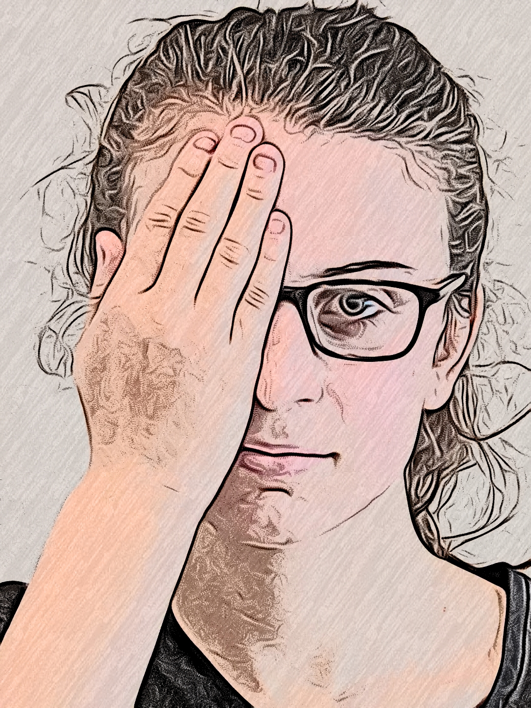

<div class="topleft">
<ion-menu-button></ion-menu-button>
</div>
<div class="img">

</div>
<div class="fardownletters">
    <label>Cover your right eye. One letter at a time will show up on the screen. For each letter, even if you are not sure, make a guess. </label>
    <hr>
</div>
    <div class="buttono">
        <ion-button routerLink="../adultChart" color="success" size="large">continue</ion-button>
    </div>

